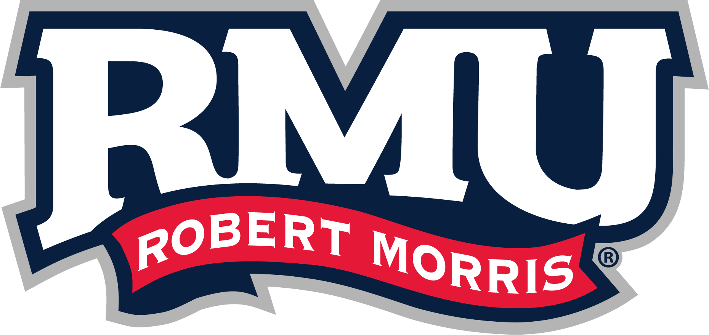

TLS
TLS & PKI audit work
Certificate Authority setup, TLS configuration, misconfiguration investigations, and certificate hardening notes.
Carin Madden — Cybersecurity
I'm a cybersecurity bootcamp student expanding on existing working knowledge of cybersecurity in financial institutions through structured, hands-on labs.
A little more on where I'm coming from and what I'm building toward.
I'm a cybersecurity bootcamp student building on working knowledge of cybersecurity in financial institutions, currently pursuing my CompTIA Security+ certification.
Everything in this portfolio comes from structured, hands-on labs — network defense, systems administration, virtualization, and applied cryptography — plus independent practice on Hack The Box.
Where I am headed, what I am learning, and the experience I am building on.
SOC Analyst, Incident Response, or GRC positions where I can continue developing hands-on defensive security skills.
The academic foundation behind my cybersecurity work.

RMUBachelor of Science in Cybersecurity
Graduate
Visit Robert Morris UniversityBuilt through structured labs across network defense, systems administration, virtualization, and cryptography.
A quick look at the newest work and updates in my cybersecurity repository.
Certificate Authority setup, TLS configuration, misconfiguration investigations, and certificate hardening notes.
Hands-on technical work covering network security, SOC concepts, research, and practical cybersecurity exercises.
Reusable documentation and presentation resources added as I continue building and organizing the portfolio.
Looking for something reusable or a closer look at my hands-on work? Start here.
Reusable presentation materials and slide resources for documenting cybersecurity topics, findings, and project work.
Browse presentation templates →Explore my technical labs, write-ups, TLS/PKI work, SOC tools, malware analysis, and other hands-on security projects.
Explore security labs →One project from the repository I keep coming back to.
security/tls-audits
I built an internal CA from scratch and used it to issue and implement TLS across a lab environment, then went looking for where the configuration could still fail — writing up what I found along the way.
My progress lives here in real time — labs, write-ups, and reference material, organized as I build it.
Certifications, skills log, presentations, and reusable templates.
Governance, risk, and compliance notes, templates, and policy examples.
Hands-on technical work across analysis, SOC tooling, and TLS.
Curated tools, cheatsheets, blogs, and reference material.
Source files and design for this portfolio.